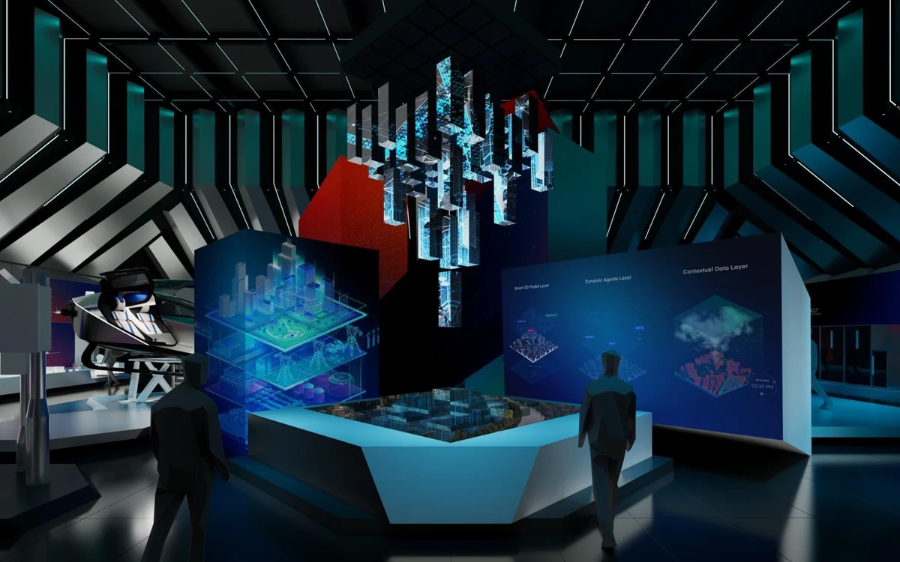
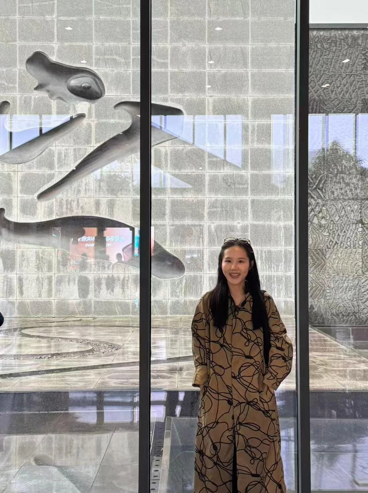

南京思德展示科技股份有限公司
策划经理
展厅全案策划、内容大纲、多媒体脚本与交互逻辑，协同设计及技术团队完成项目交付。

SELECTED PROJECTS / 01
企业展厅、城市规划馆与互动体验
7 份完整方案
没有找到相关项目。
ABOUT ME / 02
以视听叙事为起点，将品牌诉求、科技主题与城市故事转化为可感知的空间内容。连接策划、设计与技术，让方案走向现场。
查看完整简历 ↗
策划经理
展厅全案策划、内容大纲、多媒体脚本与交互逻辑，协同设计及技术团队完成项目交付。
影视策划
企业宣传片、商业短片与纪录片的创意、文案及分镜脚本，参与摄制统筹与后期制作。